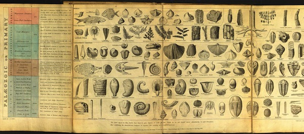
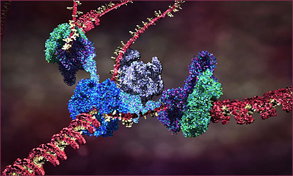

Evolutionary systems
There have been more than four decades of computational systems inspired by natural evolution. It has become a major field of machine learning and optimization. Beyond AI, it has been used in hardware and circuit design, robotics, and more recently in industrial design and architecture. It has of course also been deeply explored in art and music.
Natural and artificial evolution
The theory of natural evolution combines population, diversity, heredity and selection. Evolution requires a population of individuals that exhibit diversity (both similarities and variations between each other, both within and between species). These individuals can produce new individuals; offspring that exhibit similarites with the parent(s) through heredity. However not all of the population can successfully reproduce. Any factor that affects the possibility of an individual reproducing, thus also affects what characteristics are inherited in the population as a whole. Charles Darwin’s theory of natural selection, proposed in 1859, is that the section of the population that can reproduce is not entirely random, but rather is regulated by interactions between inherited characteristics and environmental constraints (such as available food, populations of symbionts, predators and parasites, and so on). Accordingly, the characteristics of a species may change over time (evolution), forming a history that can be investigated through the fossil records.

Artificial evolution is a form of computational simulation whose process mirrors the abstract structure of natural evolution:
- Maintain a population of finite individuals (which can reproduce)
- Support variation (including new characteristics) in the population
- Provide a mechanism of heredity between generations
- Provide a mechanism of selection
The main systematic differences are that the underlying mechanisms specified by us in advance, as are the initial populations and environmental conditions (if any). Most importantly, the mechanism of selection is usually predetermined.
This underscores a fundamental difference between artificial and natural evolution: most artificial systems are used toward a particular goal (teleological, even in artistic pursuits), natural evolution is adaptive in an open-ended, undirected, goal-less (non-teleological). In contrast, natural evolution does not imply progress, since the environmental conditions (and selective criteria) evolve along with each species. Since there is no absolute goal or progress, the most we can measure in natural evolution is the changing frequencies over time of individual species, or of individual characteristics of a population.
Viability and ecosystemic evolution
The survival of a natural species depends on its viability; the ability of enough individuals to live long enough to reproduce within an unpredictable environment. There is no pre-defined (a priori) fitness measure. Most artificial evolutionary systems however impose a fitness measure that is extremely unnatural, gearing evolution toward a desired, fixed metric (some critics compare it more to selective breeding). Such artificial evolution will not match the creative diversity of natural evolution.
Nevertheless, an artificial, viability-oriented form of evolution may be used for more theoretical and aesthetic branches of artificial life research. In these cases the viability measure arises as an emergent property of underlying laws of the world, such as the requirement to maintain energetic/metabolic balance or to maintain structural integrity, as well as the collective effects of multiple species and non-living dynamics within the environment. For this reason a viability-oriented approach is sometimes referred to as ecosystemic selection. See discussion here
Survival of the viable
Darwin’s theory is sometimes misrepresented as “survival of the fittest” or even the competitive “law of the jungle”. We have already seen that the notion of “fittest” is misguided, since it implies a static absolute measure for something that is both dynamic and highly contextual. An individual or species does not need to be the fittest, merely fit enough to be viable. Nor is competition the prime mode of interaction between species; most species are relatively independent, and the ones that do closely interact are more likely to be collaborative (symbiotic, parasitic, etc.) than competitive.
Evolution does not imply that individuals display selfish, competitive behavior. When Dawkins described evolution in terms of selfish genes, it indicates a gene-centric perspective on evolution that implies selfless and sometimes altruistic behavior in organisms.
Neutral drift
There is no reason to suppose that every variation affects viability (neither positively nor negatively). If a variation occurs that does not negatively or positively affect the reproductive capability of an individual in the environment, this variation is called neutral. Such neutral variations can tend to be accumulated over time (since there is a chance of variation at each reproduction), whose overall effect is to spread the gene pool of a population. If small changes can be accumulated in this way, over time the gene pool may even move quite far from the origin without major changes in selective fitness; this is called neutral drift.
It may be an important mechanism to escape evolutionary dead-ends (local minima in the fitness landscape). This is certainly true for many artificial evolutionary systems. It has also been hypothesized as an explanation for the long chunks of apparently unused DNA in our own genome.
Furthermore, natural evolution apperas to progress not in a smooth movement, but rather with periods of intense diversity and instability followed by extended periods of relative stability (a “punctuated equilibrium”). Neutral drift has also been proposed as a possible explanation for this behavior.
Heredity and variation: genetics
A continuous generation of novel diversity, new characteristics, is essential to the theory of natural selection. However the theory does not account for how diversity arises, simply that there must be a mechanism, which usually operates during reproduction.
In 1865 Mendel proposed that characteristics are transmitted to offspring through particles of matter (which we now call genetic material). Schroedinger conjectured that these materials must be aperiodic crystals, and the actual structure of DNA was identified several years later. The “modern synthesis” in biology today has integrated genetics with natural evolution, through the interaction of genotypes and phenotypes:
- The phenotype is the manifestation of the genotype, the individual organism in the population. It is physical and dynamic. Natural selection only operates on the phenotypic level.
- The genotype is the genetic material that is transmitted during reproduction. It encodes information that is usually static during a lifetime. Different information leads to different phenotypic variations, or even different species. Heritable variation and the creation of new characteristics operates only at the genotypic level.
Hence the modern synthesis requires not only a model for how variation is introduced, but also how genetic material is transfered, how the phenotype accordingly emerges from the genotype (developmental models), and what other roles it plays. These mechanisms are complex and not yet fully understood, but much progress has been made.
Briefly: a biological cell contains a vast array of different proteins, whose concentrations determine structures and behaviors of the cell. The proteins are specifed by information in the DNA genetic material (grouped physically into chromosomes). When a cell reproduces by mitosis, a copy of the DNA is made in the new cell. The sections of a DNA chromosome that code for behavior are called genes. These regions are constantly being transcribed, producing a specific RNA strand for each coding gene region which is in turn used to produce a specific protein; the protein string immediately folds up (in a way we cannot yet simulate) into a particular reactive shape which specifies the protein’s behavioral role in the cell. This is a one-directional flow of information: Coding DNA –> RNA –> folding –> active protein. In addition to coding regions genes may also have regulatory region which can react with specific proteins to activate or inhibit the coding-protein system, forming a complex regulatory network of interactions by which one gene can activate or inhibit another, and also specify changes of behavior of a cell according to environmental conditions such as chemical signals. These networks can be fantastically complex even in very simple organisms, according to the scientific results of functional genomics. Between the coding and regulatory regions of DNA, there are huge sections of nongenic DNA, whose role (or lack thereof) is not yet understood.

The current theory of cell replication and DNA transcription been beautifully illustrated by Drew Berry; and more of his animations here
Genetic variation can occur during replication of the genome, such as copying-error mutations (reversals of segments, insertion & removal of segments, changing individual elements in the sequence, and pair-wise substitution over whole sections) and recombination (taking sections from two different parent genes to construct a new child gene).
Artificial evolution
An artificial evolutionary system thus requires:
- A representation of genotypes.
- A mechanism to produce phenotypes from genotypes (development).
- A mechanism to evaluate the fitness (or viability) of phenotypes.
- Mechanisms to introduce diversity to a genotype.
The system is then run by these steps:
- Initialization of a ‘seed’ population of genotypes
- Development of phenotypes from the genotypes
- Evaluation and selection of best/viable candidates of phenotypes, according to fitness criteria or ongong viability conditions. Note that simply taking the best candidate alone is not necessarily the ideal strategy; selecting randomly by proportion to fitness (“roulette wheel” selection) may better overcome local maxima.
- Reproduction, creating new genotypes (applying mutation and recombination for creative variety), according to variation rates/probabilities.
- Repeat from step (2) or terminate if a terminating condition is satisfied (such as sufficient fitness).
Steps 2-5 may be run in lock-step, or asynchronously with overlapping individual life-spans.
Caveats
Artificial evolution generates results with randomness, without formal proofs. It may take a long time or a lot of processing power to find a satisfactory result, or may not reach a result at all.
Genetic representation
The representation of the genotype, and mechanisms of development, genetic transfer and variation, must be provided by the author. Many systems represent genetic information as a sequence of data, such as a string of characters, integers or binary digits.
-- a genome will contain 10 genes, each having 8 possible values: local genome_size = 10 local genome_range = 8 -- generate a random "seed" genotype: function genome_make() local g = {} for i = 1, genome_size do g[i] = math.random(genome_range) end return g end
Some systems use more elaborate structures (trees, networks), though it can be shown that these are reducible to sequences.
Development
In artificial evolution an obvious analogy of the genotype-as-code and phenotype-as-running-program underlies most systems. In the simplest cases the developmental process is a linear interpretation of genome values to phenotype properties:
-- the semantics of each gene (a mixture of numbers and math operators) local encoding = { "+", "-", "*", "%", "1", "2", "3", "4" } -- develop the genome into a list of characters: function develop(genome) local pheno = {} -- intepret genes as characters: for i, gene in ipairs(genome) pheno[i] = encoding[i] end return pheno end -- utility to view the phenotype: function pheno_print(pheno) print(table.concat(pheno)) end
Fewer systems provide full models of development and genetic transfer, in which complex feedback processes interpret the genome, possibly in environmental context, although this would be far more biologically realistic, not to mention far more creative!
Variation
The mechanisms of variation possible partly depend on the representation chosen. The two most common principles of variation in artificial evolution are naturally inspired:
- Random mutation; akin to errors copying DNA. If the genome is represented as a binary string, then random locations in the string may be replaced by new random characters. For example, a parent “dog” could produce children such as “fog”, “dqg”, and so on. Obviously some mutations will not create viable individuals.
-- chance of a gene being mutated local mutation_rate = 0.1 function genome_mutate(genome) for i, gene in ipairs(genome) do -- mutate? if math.random() < mutation_rate then -- mutate plus or minus 1: if math.random() < 0.5 then gene = gene + 1 else gene = gene - 1 end -- keep within valid range: gene = ((gene - 1) % gene_range) + 1 -- store: genome[i] = gene end end end
- Sexual cross-over (or recombination): akin to sexual reproduction in biology. As a binary string, the child takes the first fraction from one parent, and the remainder from the other. For example, breeding the strings “dog” and “cat” could generate children such as “dot”, “dat”, “cag” and “cog”. A more flexible system might also permit “doat”, “caog”, “dt”, etc.
function genome_crossover(parent1, parent2) local child = {} -- the crossover point: local cross = math.random(genome_size) -- copy first part from parent1 for j = 1, cross do child[j] = parent1[j] end -- copy second part from parent2 for j = cross+1, genome_size do child[j] = parent2[j] end end return child end
- Other variations (insertion, deletion, inversion) are less common, but have been used.
Why use reproduction for evolution? In the face of an unpredictable environment, we cannot know which strategy will be best; we can try small variations, and hedge our bets by making very many of them (population diversity). An individual loss is not catastrophic, but a few successes can be learned from. Furthermore, the face of unpredictibility implies that what was true today may not be tomorrow, so the flexibility to avoid timeless commitment is also a good strategy; but the inheritance of choices is a useful option when the environment retains some stability. If the world were fully predictable, a rational, teleological, monothematic strategy would be preferable. But the world isn’t totally random either (if it was, there would be no valid strategy worth pursuing.)
See the red queen problem.
Selection by fitness
One of the central problems in evolutionary art and music is how to implement selection.
- A predefined fitness function. This is easy if the task is formally measurable (such as computing a value, shown below). But for this to be possible in art or music, a formal measure of aesthetic quality is required; can we really do that?
-- evaluate a phenotype according to how closely it computes a target value: local target = 10 function pheno_eval(pheno) -- convert phenotype to string and run it as Lua code: local f = loadstring("return "..table.concat(pheno)) local result = f() -- compute absolute error from target: local err = math.abs(target - result) -- convert to a fitness socre: local fitness = 1 / (1 + err) return fitness end`
- Interactive selection. Pioneered by Dawkins' Biomorphs program and Karl Sims' evolved images, in which several candidates are presented to human observers, who apply the selection manually. Also known as aesthetic selection. A problem here is that the human becomes the bottleneck of evolution, constraining population sizes and rates of evolution to very small scales. It may arguably also tend toward selecting for the aesthetic average rather than the remarkable.
- An interesting variation is to make the selection continuous and implicit. Jon McCormack’s Eden measured fitness globally according to how long gallery visitors remained in front of a particular evolving sub-population.
- First evolve a population of artificial art critics, trained from human-evaluated examples, and then use these to apply selection criteria to a population of candidate artworks.
- Some projects have also proposed a form of artificial co-evolution, where one population represents the candidate products, and the other population represents artificial critics. This more closely approaches “art as it could be”, since the bias of the artificial critics may be rather different than human biases.
- Take an ecosystemic approach, in which fitness is measured as viability to reproduce in an unpredictable and dangerous environment. For example, a multi-agent system in which agents must maintain a positive energy balance, and possibly also meet mates, in order to reproduce. In this case evolution is not being used to evolve better art, but as a material of art construction.
Populations and generations
To glue this together we need to define a population of individuals, and a process to create new generations.
local population_size = 40 -- store the population as a list: local population = {} -- seed the population: for i = 1, population_size do -- create genome: local g = genome_make() -- develop into phenotype: local p = genome_develop(g) -- store genome in phenotype: p.genome = g -- store phenotype in population: population[i] = p end -- run one step for the whole generation: function population_regenerate() -- first evaluate fitness: for i, pheno in ipairs(population) do pheno.fitness = pheno_eval(pheno) end -- next, sort by fitness: table.sort(population, function(a, b) return a.fitness > b.fitness end) -- now create a new generation: local newpop = {} for i = 1, population_size do -- note that this biases parent selection to higher-scoring individuals: local parent1 = population[math.random(i)] local parent2 = population[math.random(i)] -- do crossover and mutation: local child = genome_crossover(parent1, parent2) genome_mutate(child) -- store in new population: newpop[i] = child end -- replace old generation: population = newpop end
Obviously population_regenerate() is a synchronous sweep over all individuals, which is also far from realistic. An asynchronous approach would replace population members one at once, spread over time. A yet more realistic model would allow the population size to vary.
Genetic Programming
Genetic Programming was invented by Nigel Cramer in 1985, but greatly expanded through the work of John Koza. GP evolves programs; it is an example of metaprogramming.
GP has been used to generate programs to solve hard problems, and to evolve control systems for artificial agents and robots. The central concept is that the generating a phenotype is a process of generating code. Populations of generated programs can then be selected and evolved as usual.
Typically the programs for GP follow a tree-like structure. The leaves of the tree are terminals and the branches are functions. Terminals have no inputs; typical terminals are constant numbers and global variable names. Non-terminal functions are specified according to their operator (such as mathematical addition, multiplication, cosine, etc.); they have one or more inputs, which maybe terminals or other functions. This structure is natural to LISP programs:
(* 6 (sin (+ x 2)))
The above would be represented in Lua code as follows:
return 6 * (math.sin(x + 2))
The Linear Genetic Programming variant which represents programs as sequences of instructions rather than trees. It more closely resembles the procedural nature of widely-used programming languages, virtual machines, assembly and machine code. Each instruction uses a single function, with zero or more arguments (constants or registers), and assigns to a register.
The above program could be linearized to normal form in Lua as follows:
local r1 = 2 local r2 = x local r3 = r1 + r2 local r4 = math.sin(r3) local r5 = 6 local r6 = r5 * r4 return r6
The linear structure may appear more flexible, since it allows branches to reconnect; however the functional programming interpretation of the tree is provably equivalent. Ultimately the choice depends on practical rather than theoretical questions.
Genetic representation
It is convenient to represent these programs as a data structure, from which the phenotype code is generated. Doing so makes crossover and mutation much easier.
For example, integers can be used to specify which function or terminal type a node contains, and which nodes are used as arguments. Tree structures can nest their data directly, while linear structures can refer to nodes by integer register id (or register stack offset).
For example, here is the above program as a list of instruction codes:
-- operator IDs: { [1] = "constant", [2] = "global", [3] = "add", [4] = "mul", [5] = "sin" } -- global IDs: { [1] = "x", } local geno = { { 1, 2 }, { 2, 1 }, { 3, 1, 2 }, { 5, 3 }, { 1, 6 }, { 4, 5, 4 }, }
Initialization
Generating a seed tree can follow a recursive structure, starting from the root at depth 0, up to a maximum depth m:
- If depth equals m choose a terminal at random,
- Else select a function or terminal at random.
- If the node type is a function, choose a random function. Each function has a specific number of children (e.g. the + function has two children); for each child node, repeat the algorithm with depth increased by one.
An alternative algorithm for linear GP, with n operations:
- Loop from 1 to n:
- If n is less than the maximum number of arguments (typically 2 or 3), create a random terminal node.
- Else create a random terminal or a random function.
- If the node type is a function, use a randomly selected previous node for each of the function arguments.
- The root (result) node is node n.
Variation
For a linearized genotype representation, the genetic mutations and crossover operators are similar to other sequence-based evolutionary systems.
For tree-like representations it becomes more complex and interesting: Mutations on a tree can include modifcation of instruction arguments, replacement of sub-trees, function mutation, etc. Cross-over can be implemented as swapping sub-trees of parents.
Discussion
Karl Sims used GP for his genetic images, and for his evolving virtual creaturs.
Jurgen Schmidhuber proposed using GP to evolve GP (Meta-GP), since things like chromosomes, crossover etc. are themselves phenomena that have evolved.
A field guide to GP An overview paper Very short tutorial
Discussion examples

See Karl Sims' Genetic Images. 1991 Siggraph Paper
Scott Draves, “Evolution and Collective Intelligence of the Electric Sheep,” The Art of Artificial Evolution, 2008.
An excellent discussion of the genetic algorithm in art and its relation to Deleuze, by Manuel Delanda